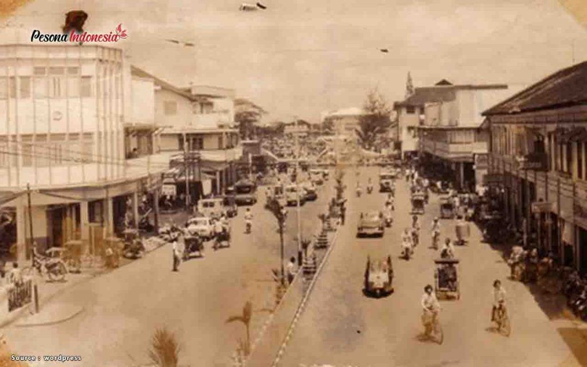
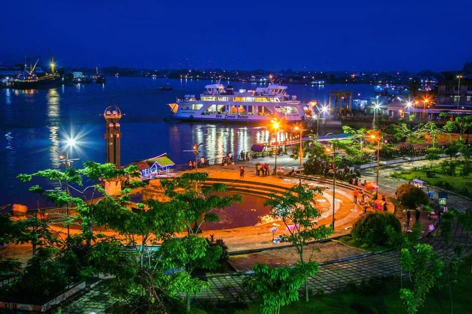
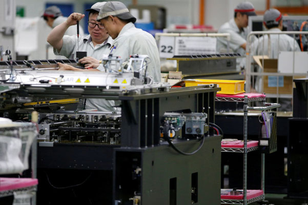
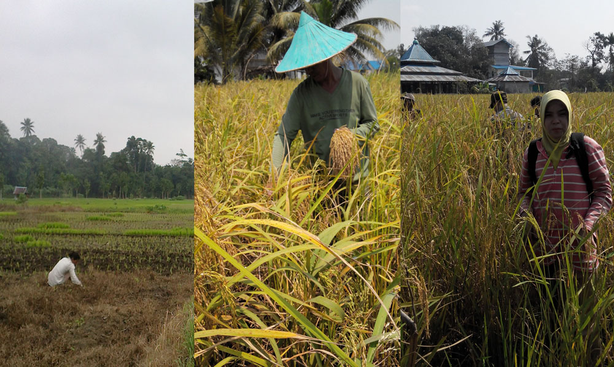
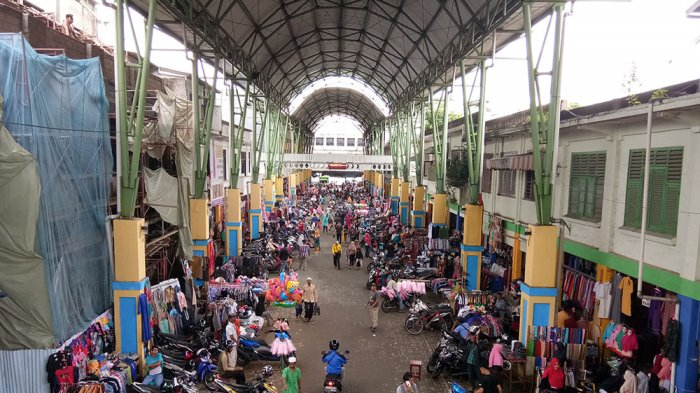

Sejarah

Kota Pontianak didirikan oleh Syarif Abdurrahman Alkadrie pada hari Rabu, 23 Oktober 1771 (14 Rajab 1185 H) yang ditandai dengan membuka hutan di persimpangan Sungai Landak, Sungai Kapuas Kecil, dan Sungai Kapuas Besar untuk mendirikan balai dan rumah sebagai tempat tinggal. Pada tahun 1778 (1192 H), Syarif Abdurrahman dikukuhkan menjadi Sultan Pontianak. Letak pusat pemerintahan ditandai dengan berdirinya Masjid Jami' (kini bernama Masjid Sultan Syarif Abdurrahman) dan Istana Kadariah yang sekarang terletak di Kelurahan Dalam Bugis, Kecamatan Pontianak Timur.
Geografis

Kota Pontianak terletak pada Lintasan Garis Khatulistiwa dengan ketinggian berkisar antara 0,1 sampai 1,5 meter di atas permukaan laut. Kota dipisahkan oleh Sungai Kapuas Besar, Sungai Kapuas Kecil, dan Sungai Landak. Dengan demikian Kota Pontianak terbagi atas tiga belahan.
Struktur tanah kota Pontianak berupa lapisan tanah gambut bekas endapan lumpur Sungai Kapuas. Lapisan tanah liat baru dicapai pada kedalaman 2,4 meter dari permukaan laut. Kota Pontianak termasuk beriklim tropis dengan suhu tinggi (28-32 °C dan siang hari 30 °C).
Rata–rata kelembaban nisbi dalam daerah Kota Pontianak maksimum 99,58% dan minimum 53% dengan rata–rata penyinaran matahari minimum 53% dan maksimum 73%.[7]
Besarnya curah hujan di Kota Pontianak berkisar antara 3.000–4.000 mm per tahun. Curah hujan terbesar (bulan basah) jatuh pada bulan Mei dan Oktober, sedangkan curah hujan terkecil (bulan kering) jatuh pada bulan Juli. Jumlah hari hujan rata-rata per bulan berkisar 15 hari.
Ekonomi
Sebagian besar perekonomian kota Pontianak bertumpu pada industri, pertanian, dan perdagangan.
Industri

Jumlah perusahaan industri besar dan sedang di Kota Pontianak yang telah terdata selama tahun 2005 adalah 34 perusahaan. Tenaga kerja yang diserap oleh perusahaan industri tersebut berjumlah 3.300 orang yang terdiri dari pekerja produksi 2.700 orang dan pekerja lainnya atau administrasi 600 orang. Perusahaan industri besar atau sedang yang terletak di Kecamatan Pontianak Utara menyerap tenaga kerja terbesar, yaitu 2.952 orang.
Nilai keluaran yang dihasilkan dari perusahaan industri besar atau sedang adalah sebesar 1,51 triliun rupiah, di mana perusahaan industri besar atau sedang yang berada di Kecamatan Pontianak Utara yang didominasi oleh perusahaan industri karet, sedangkan nilai keluaran yang terkecil berasal dari perusahaan yang terdapat di Kecamatan Pontianak Kota, senilai 2,85 miliar Rupiah.
Pertanian

Pada tahun 2006, jenis tanaman pangan yang hasilnya paling besar adalah ubi kayu, padi, ubi rambat. Penduduk juga bertani sayuran dan lidah buaya. Tanaman buah-buahan yang banyak ada di Kota Pontianak adalah nangka, pisang, serta nanas.
Perternakan di kota Pontianak terdiri dari sapi (potong dan perah), kambing, babi, dan ayam (ras dan buras).
Perdagangan

Perdagangan merupakan salah satu usaha yang berkembang pesat di Kota Pontianak. Perdagangan modern mulai berkembang pada tahun 2001 dengan berdirinya Mal Matahari Pontianak di Pontianak Kota. Pusat perbelanjaan modern mulai dibangun di berbagai sudut kota, seperti Mal Pontianak dan Ayani Mega Mall Pontianak (Pontianak Selatan). Berbagai perusahaan retail nasional mulai mendirikan usahanya di Pontianak, seperti Alfamart dan Indomaret.